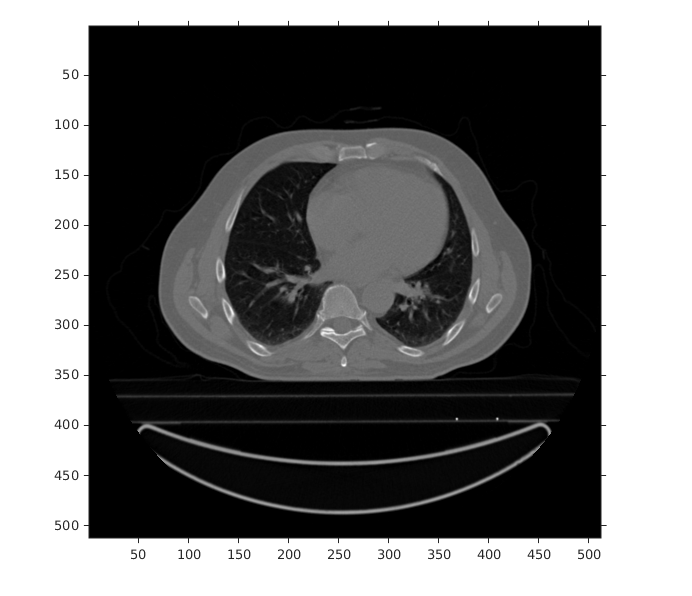
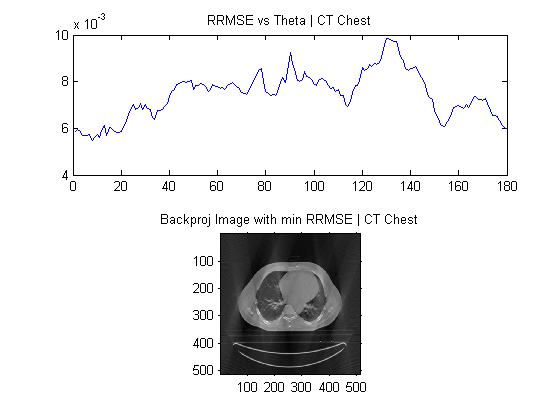
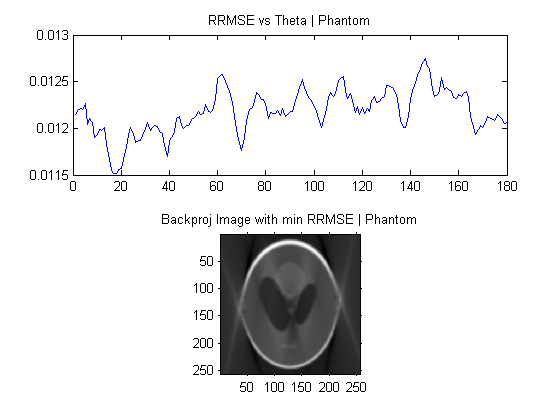

Contents
clc;
clear all;
close all;
CT Chest Data
chest_data = load('../data/CT_Chest.mat');
imshow(chest_data.imageAC,[]);
inputImage_1 = mat2gray(chest_data.imageAC);

Phantom Data
phantom_data = load('../data/myPhantom.mat');
imshow(phantom_data.imageAC,[]);
inputImage_2 = mat2gray(phantom_data.imageAC);
thetaRange = 1:1:150;

CT_Chest MAT
radonTransform = radon(inputImage_1,thetaRange);
RRMSE_array = zeros(1,length(thetaRange));
for i = 1:180
backPropImage = mat2gray(0.5*iradon(radonTransform, thetaRange + i,'linear','none',1,size(inputImage_1,1)));
RRMSE_array(i) = sqrt(sum((inputImage_1(:)-backPropImage(:)).^2))/sum((inputImage_1(:).^2));
end
minIndex = find(RRMSE_array == min(RRMSE_array))
minBackPropImage = mat2gray(0.5*iradon(radonTransform, thetaRange + minIndex,'linear','none',1,size(inputImage_1,1)));
figure
subplot(2,1,1)
plot(RRMSE_array)
title('RRMSE vs Theta | CT Chest')
subplot(2,1,2)
imshow(minBackPropImage)
title('Backproj Image with min RRMSE | CT Chest')
minIndex =
14

Phantom MAT
radonTransform = radon(inputImage_2,thetaRange);
RRMSE_array = zeros(1,length(thetaRange));
for i = 1:180
backPropImage = mat2gray(0.5*iradon(radonTransform, thetaRange + i,'linear','none',1,size(inputImage_2,1)));
RRMSE_array(i) = sqrt(sum((inputImage_2(:)-backPropImage(:)).^2))/sum((inputImage_2(:).^2));
end
minIndex = find(RRMSE_array == min(RRMSE_array))
minBackPropImage = mat2gray(0.5*iradon(radonTransform, thetaRange + minIndex,'linear','none',1,size(inputImage_2,1)));
plot(RRMSE_array)
imshow(minBackPropImage)
figure
subplot(2,1,1)
plot(RRMSE_array)
title('RRMSE vs Theta | Phantom')
subplot(2,1,2)
imshow(minBackPropImage)
title('Backproj Image with min RRMSE | Phantom')
minIndex =
18